Boutique vineyards
Every visitor-friendly estate in East and West Sussex.
Winter 2026 Part of the guide to vineyards across England & Wales
The vines are turning gold and the season moves indoors: Sunday roasts, raclette evenings and Christmas markets among the vines. Find all 46 Sussex vineyards, plus 22 in Kent, with the details that make a day out easy.
Sussex & Kent · estate-checked · updated November 2026
Every visitor-friendly estate in East and West Sussex.
Wine days set among the South Downs and High Weald.
Tastings, tours, long lunches and seasonal events.
Stations, realistic taxi times, dog policies and local tips.
Autumn & winter 2026
As the days shorten, the vineyard calendar moves indoors: roasts, raclette, workshops and Christmas markets. Every date and detail below was confirmed to us by the estate itself.
Halloween afternoon teas.
Christmas Festival at the vineyard.
FIZZTIVITIES, a pre-Christmas afternoon. Wine club members get first booking.
Wreath-making workshop.
The annual Christmas Market.
Christmas Sips, from 12:30pm. Over-18s, limited tickets.
Cellar Table dinner cooked by Mark Hix.
Chef Series evening with the Fordwich Arms.
Roast dinners on Sundays through the winter. The estate calls them its most loved event.
Raclette eveningsMousehallSupper clubs make way for raclette evenings in autumn and winter.
Winter tastingCourt GardenThe Autumn & Winter Winery Experience, with a vermouth spritz, runs to the end of March.
Tour, then lunchArteliumAn 11am tour, then lunch or dinner in the Kitchen. Open Friday to Sunday all winter.
Walk in any dayGusbourne, KentThe Nest cellar door takes walk-ins daily, 10am to 5pm. Tours all year, except Tuesdays.
Drop in to tasteDomaine Evremond, KentWalk-ins always welcome from 11am, Wednesday to Sunday, and a car-free walk from Chilham.
Every vineyard open this winter, with more dates → Christmas at vineyards across England & Wales →
The complete Sussex list
Find all 46 estates on the map, then filter by area and the practical details that shape a good day. Pick a pin to bring that vineyard to the top of the list, or browse the seven wine trails.
The map needs JavaScript. Every vineyard is listed below.
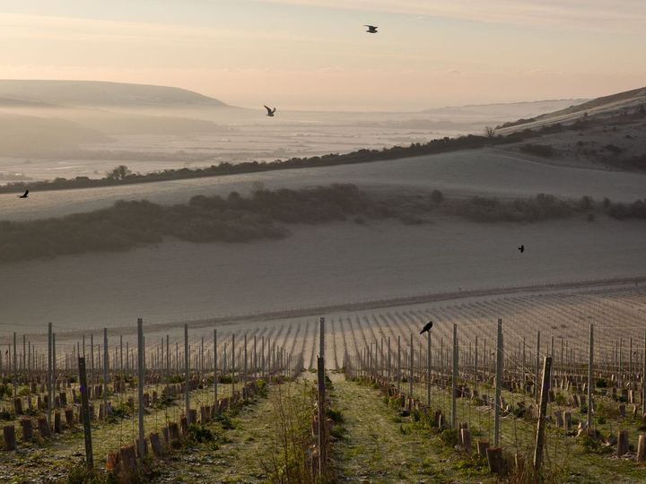
Wealden Trail
Selected on the map
Alfriston / Seaford
Summer tours Thursday–Sunday, Friday–Sunday tasting experiences, two places to eat, Flint Barns accommodation and a free 5km vineyard trail.
Nearest station Seaford (10 min)
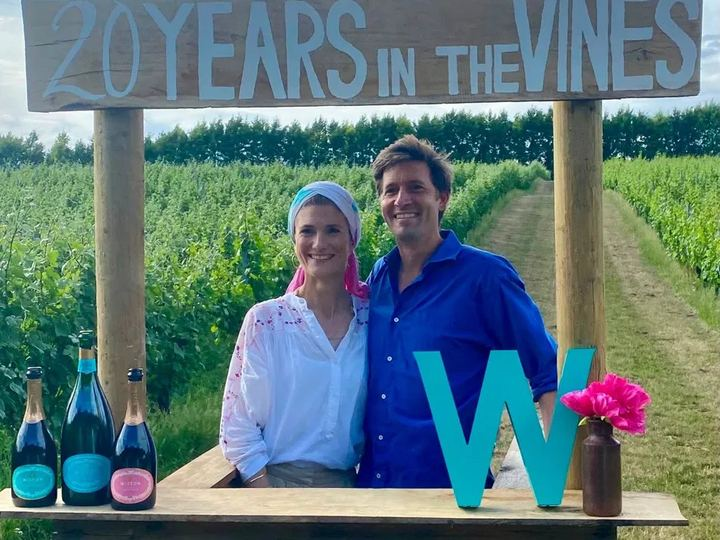
Worthing & the Downs
Selected on the map
Washington / Pulborough
Chalk restaurant, walking and cycling Vineyard Explorer tours, 58km of footpaths across the estate, and new 2026 wines including Tank Five and Fifty Summers Rosé.
Nearest station Worthing/Horsham (20 min)
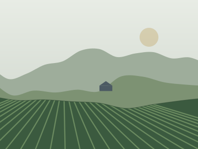
IllustrationHorsham & Arun Valley
Selected on the map
West Chiltington
Open Day Tours only, £50pp, no cellar door or drop-in. 2026 is sold out; 2027 dates are announced in Q1 2027.
Nearest station Pulborough (15 min)
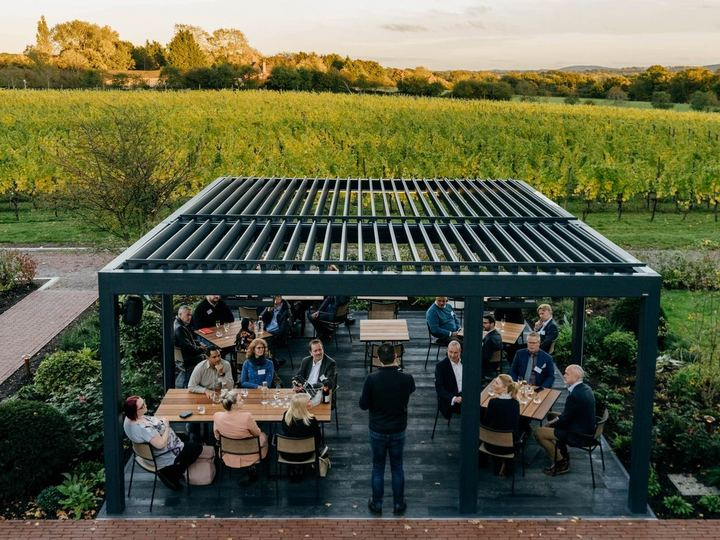
Haywards Heath & Ditchling
Selected on the map
Ditchling / Hassocks
Open every day, tours all year (18+), drop-in tastings at the Winery Shop, a free 30-minute self-guided vineyard walk and free parking with EV bays.
Nearest station Burgess Hill (10 min)
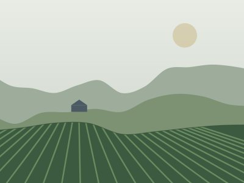
IllustrationHorsham & Arun Valley
Selected on the map
Bolney / Haywards Heath
Year-round tours from £30, Cellar Door tastings from £20, restaurant and café, free vineyard grounds and a shop full of local produce.
Nearest station Haywards Heath (15 min)

Chichester & Petworth
Selected on the map
Chichester
£21 tours, eight lodges sleeping two with breakfast delivered, the whole estate dog-friendly, free parking — and Sunday roasts through the winter.
Nearest station Chichester (10 min)
 Illustration
IllustrationEast Grinstead & High Weald
Selected on the map
East Grinstead
150-acre estate, fishing lakes, 14th-c Tithe barn, self-guided trails, Coach House cottage. Wedding venue.
Nearest station East Grinstead
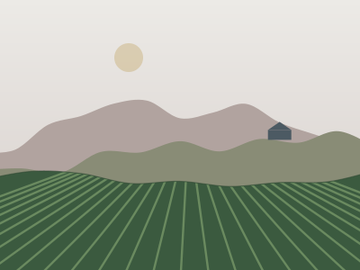
IllustrationChichester & Petworth
Selected on the map
Chichester
'Has it all' — world-class dining, 5 luxury lodges (Amazing Spaces designer), 360° experience room, gin masterclasses.
Nearest station Nutbourne (8 min)

Horsham & Arun Valley
Selected on the map
Pulborough
Free self-guided vine trail with an illustrated map Mon–Sat, a windmill free to enter, £35 Saturday tours Easter–September, and vines planted in 1979.
Nearest station Pulborough (10 min, pre-book)
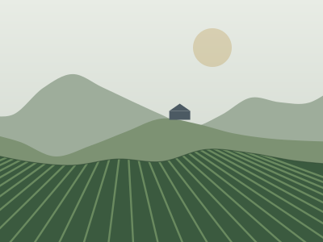
IllustrationHorsham & Arun Valley
Selected on the map
Lower Beeding / Horsham
Brunch, Tour & Tasting £49.50pp, Gardens to Glass £65pp, gardens open 7 days, two hotels — and you drive your own electric golf buggy out to the vines.
Nearest station 45 min from London + 10 min taxi
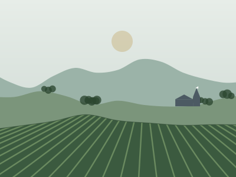
IllustrationWealden Trail
Selected on the map
Furners Green / Uckfield
100,000+ vines on edge of Ashdown Forest. Three woodland/vineyard trails, famous for spring bluebells. Tours from £25.
Nearest station Haywards Heath/Uckfield (20 min)
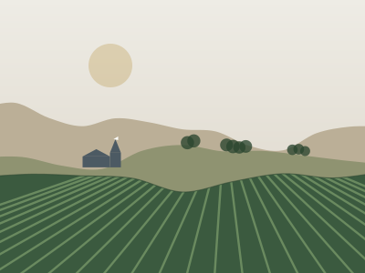
IllustrationRother Wine Triangle
Selected on the map
Beckley / Rye
Wine flights Tue–Sun May–Oct, Saturday tours through summer, sleeps 28 across shepherd’s huts and barns. No self-guided walking.
Nearest station Rye (book a taxi ahead)
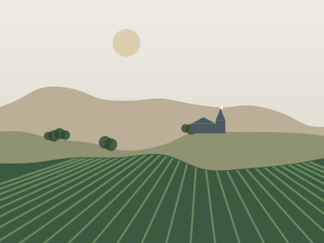
IllustrationRother Wine Triangle
Selected on the map
Peasmarsh / Rye
Daily 90-minute tours at £40pp with four wines, £15 wine flights on the bar, dogs in the grounds, bar and pizza area. Tours are 18+.
Nearest station Rye (taxi)
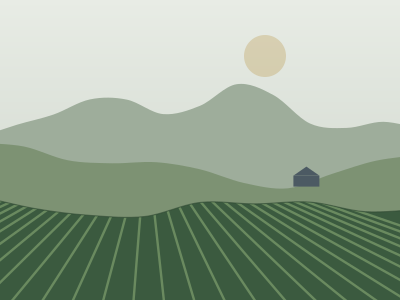
IllustrationHorsham & Arun Valley
Selected on the map
Pulborough
£30 public tours daily at 11am covering the winery and the vines, £40 private, dogs welcome everywhere and under-18s welcome on tours.
Nearest station Billingshurst (nearest)
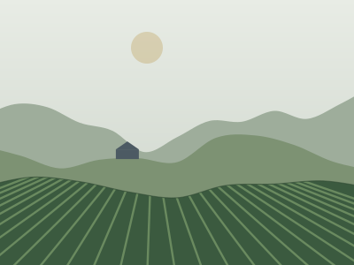
IllustrationHorsham & Arun Valley
Selected on the map
Stopham / Pulborough
21,000 vines, Grade II listed barn winery. Tours with winemakers Simon/Tom + optional riverside pub lunch (The White Hart).
Nearest station Pulborough (5 min)
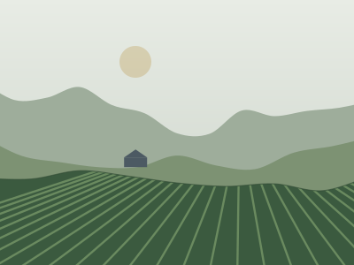
IllustrationHorsham & Arun Valley
Selected on the map
Albourne / Hassocks
Family-owned boutique, edge of South Downs. Full tour + tutored tasting; Cannonball e-bike wine tours visit at weekends.
Nearest station Hassocks (10 min)
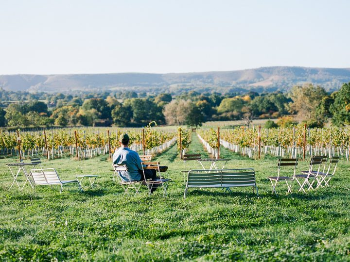
Haywards Heath & Ditchling
Selected on the map
Streat / Hassocks
Open Friday to Sunday, tours at 11am in winter, lunch and dinner in the Artelium Kitchen, and art you can see without a tour.
Nearest station Plumpton (30 min walk) / Burgess Hill (taxi)
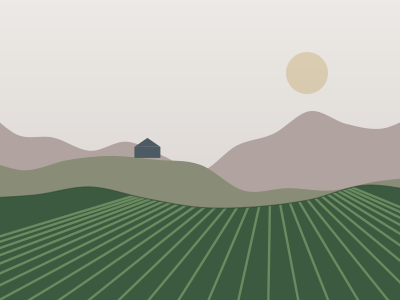
IllustrationChichester & Petworth
Selected on the map
Petworth
£25 tours (£30 from 2027), a Sparkling Wine Bar you can walk into with no ticket from 1pm Sat & Sun, and Sunset Sipping at £75 for two. May–September season.
Nearest station Pulborough or Haslemere (15 min)
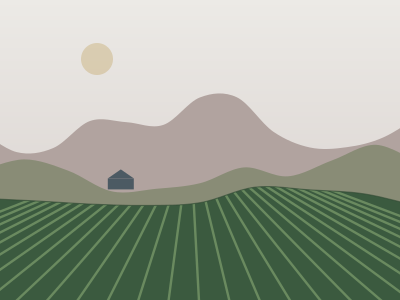
IllustrationChichester & Petworth
Selected on the map
Petworth
Family-run with panoramic South Downs views. Terrace Bar Fri/Sat, vineyard shop.
Nearest station Pulborough (15 min)
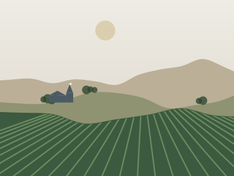
IllustrationRother Wine Triangle
Selected on the map
Robertsbridge
Drop in for a tasting all summer, book a tour by appointment, or stay over with a tour and tasting package. Robertsbridge station is a short taxi ride away.
Nearest station Robertsbridge (15 min)
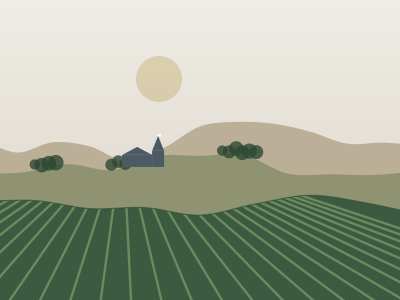
IllustrationRother Wine Triangle
Selected on the map
Winchelsea
Single estate on 120-acre Wickham Manor. Old cellars run beneath Winchelsea; 16th-c manor stay with sea views.
Nearest station Rye (10 min)
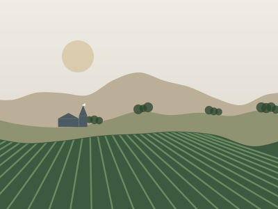
IllustrationRother Wine Triangle
Selected on the map
Sedlescombe / Robertsbridge
UK’s oldest organic vineyard (1979). £25 guided tours, drop-in flights from £15, free vineyard and woodland walks, open Wed–Sun and right through the winter.
Nearest station Battle (estate’s recommendation)
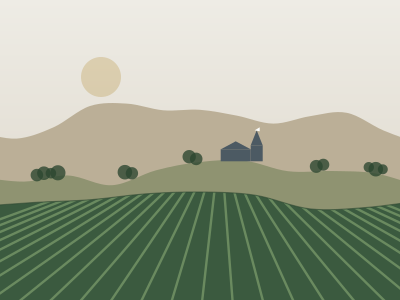
IllustrationRother Wine Triangle
Selected on the map
Mountfield / Robertsbridge
Pretty 10-acre family estate. Winery in old dairy, timber-beamed tasting room in the stables; cabin stay sleeps 2.
Nearest station Robertsbridge (8 min)
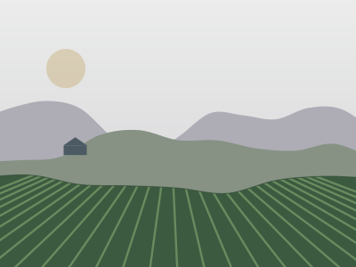
IllustrationWorthing & the Downs
Selected on the map
Worthing
Doubles as an event/wedding venue between Littlehampton & Worthing. Group tastings + cream teas/canapés/lunch.
Nearest station Goring-by-Sea (10 min)
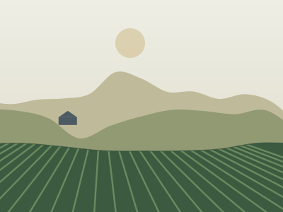
IllustrationHaywards Heath & Ditchling
Selected on the map
Haywards Heath
Cellar door with estate-exclusive wines, garden bar (inside & out) for private celebrations, free secure parking.
Nearest station Haywards Heath
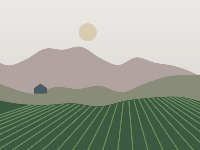
IllustrationChichester & Petworth
Selected on the map
Haslemere (Sussex Weald)
Highest point of the Sussex Weald, Champagne-like soils. First vines 2010; award-winning still & sparkling, big Downs views.
Nearest station Haslemere (15 min)
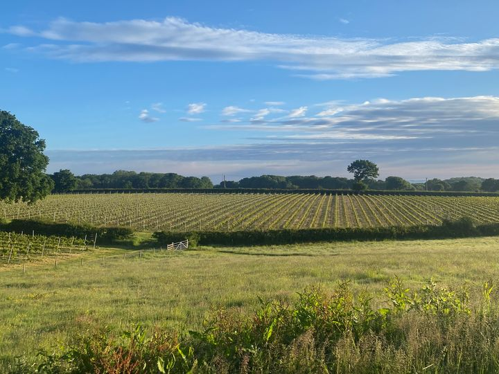
Haywards Heath & Ditchling
Selected on the map
Ditchling
Sparkling wine tours April to October, a winter winery experience to March, Saturday picnic lunches in summer. Dogs on leads.
Nearest station Hassocks
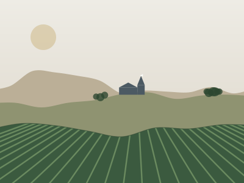
IllustrationRother Wine Triangle
Selected on the map
Westfield / Hastings
One of England's oldest family vineyards (est. 1971) near Hastings. Shop, self-guided & guided tours.
Nearest station Hastings
Horsham & Arun Valley
Selected on the map
Pulborough
Tastings, tours and private tours with the owner or winemaker almost every day of the year. Book online.
Nearest station Billingshurst / Pulborough
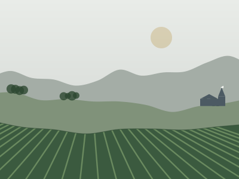
IllustrationEast Grinstead & High Weald
Selected on the map
Eridge
Small family estate: phone ahead for the cellar door, or book a bespoke tasting with the owners for six or more.
Nearest station Eridge (5 min)
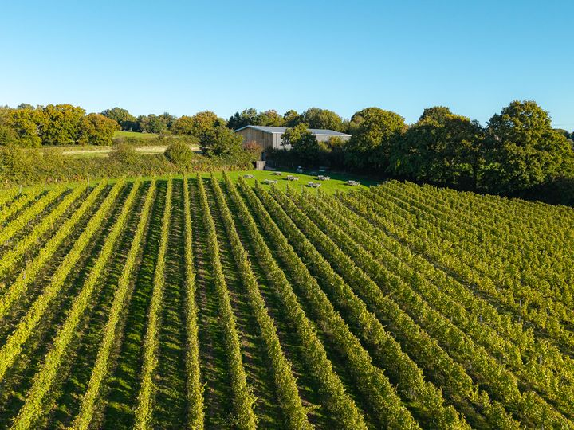
Wealden Trail
Selected on the map
Heathfield
Café and shop open Tuesday to Sunday, tours on most Saturdays, walk-in lunches and picnics you can book any time.
Nearest station Uckfield (15 min)
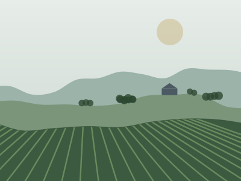
IllustrationWealden Trail
Selected on the map
Rotherfield
500-yr-old organic farm, micro-winery, natural wines, formal gardens & lake. Cottage/huts/orangery stays with indoor pool.
Nearest station Uckfield (20 min)
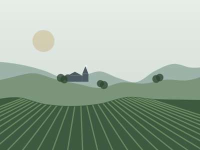
IllustrationWealden Trail
Selected on the map
Wadhurst / Crowborough
Drop in Monday to Saturday for a glass, a cocktail or a sharing board; tours and tastings by appointment Wednesday, Friday and Saturday. Dogs welcome.
Nearest station Wadhurst (10 min drive)
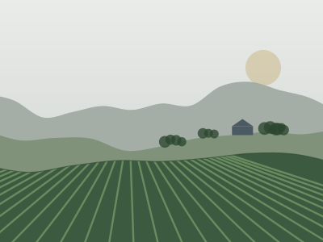
IllustrationEast Grinstead & High Weald
Selected on the map
Eridge
Open 10 to 5 on most weekends May to September, tours at 12 and 2, and picnics welcome.
Nearest station Eridge (12 min walk)
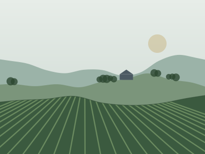
IllustrationWealden Trail
Selected on the map
Ashdown Forest / Uckfield
Tours and tastings May to September with homemade nibbles, dogs welcome, and groups of ten or more all year.
Nearest station Uckfield (bus 29) / Buxted (taxi)
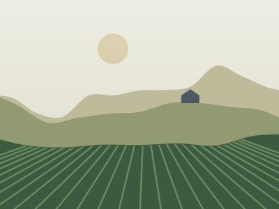
IllustrationHaywards Heath & Ditchling
Selected on the map
Ditchling
Boutique estate running small-group workshops + guided tours with tasting flights.
Nearest station Lewes
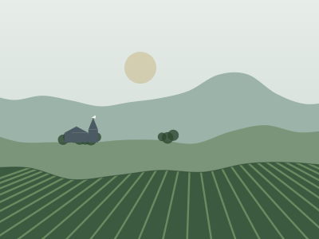
IllustrationWealden Trail
Selected on the map
Herstmonceux
Established sparkling producer near Herstmonceux. Visitor details are being confirmed with the estate.
Nearest station Polegate
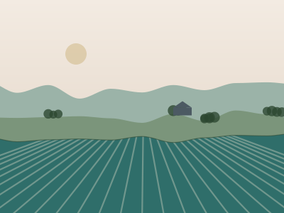
IllustrationWealden Trail
Selected on the map
Blackboys
A vineyard near Blackboys in East Sussex with open-day tastings a few times a year, private tasting experiences, and Christmas Sips in December.
Nearest station Uckfield, then the hourly bus
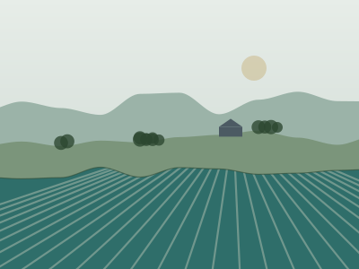
IllustrationWealden Trail
Selected on the map
Hellingly
A vineyard and winery at Hellingly on the Cuckoo Trail, so you can walk, cycle or ride in, with tours from May to September, Fondue Fridays through the winter and late opening in summer.
Getting there Walk or cycle in on the Cuckoo Trail
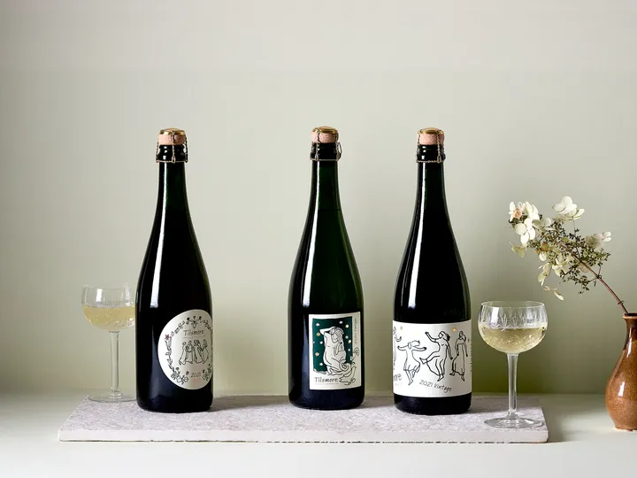
Wealden Trail
Selected on the map
Mayfield
A vineyard at Quarry Wood Farm near Mayfield, with summer Saturday tours, sound baths in a woodland amphitheatre, and an open garden for the National Garden Scheme in May.
Nearest station Check with the estate
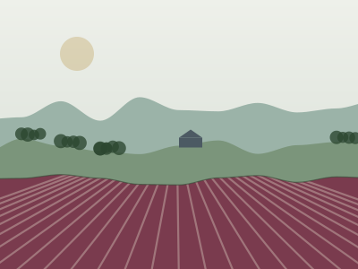
IllustrationChichester & Petworth
Selected on the map
Haslemere
A sparkling wine estate near Haslemere with tours and tastings on one Saturday a month from April, a vineyard tour and picnic through the summer, and the Dovecote and Bathing House to see.
Nearest station Haslemere (taxi)
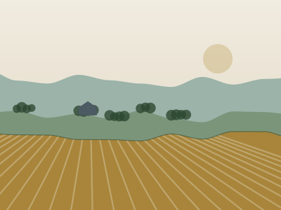
IllustrationHaywards Heath & Ditchling
Selected on the map
Newick
A young estate in Newick with tours on Friday and Saturday mornings from May to September, cheese and charcuterie plates, picnics from 2027, and its first still wines now released.
Nearest station Haywards Heath, then the bus
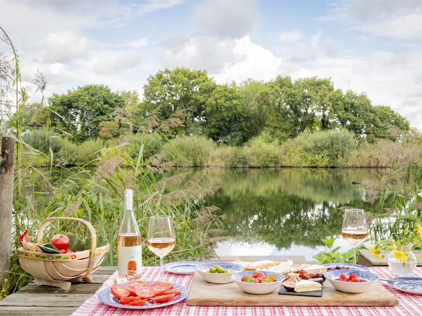
Wealden Trail
Selected on the map
Herstmonceux
A vineyard between lakes and ancient woodland at Lime Cross in Herstmonceux, with monthly tours and tastings from next season, pop-up dining, a lakeside spa evening, open-air theatre, and places to stay.
Nearest station Check with the estate
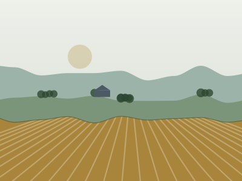
IllustrationHaywards Heath & Ditchling
Selected on the map
Wivelsfield Green
A wine estate at Wivelsfield Green with tours and tastings three days a week, Cellar Table dinners with guest chefs, and Sugrue Sundays lunches in summer.
Nearest station Haywards Heath (taxi)
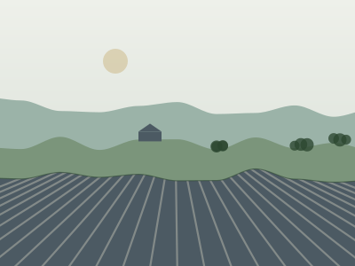
IllustrationEast Grinstead & High Weald
Selected on the map
Rowfant
A small family-run Bacchus vineyard at Rowfant, with pre-booked tours and tastings on summer weekends and two rescue donkeys, Patsy and Patrick.
Nearest station Three Bridges or East Grinstead, taxi
Nothing matches that Saturday.
Try dropping a filter — or widen the trail to all of Sussex.Sussex wine country, made simple
Not just names on a map. We check the details that decide whether a day actually works: where to eat, where to stay, realistic station transfers, dog policies and what first-time visitors should not miss.
How the guide is researched →Choose the day you want
Whether you want a long lunch, a night among the vines or an easy train journey from London, begin with the practical guide that matches your day.
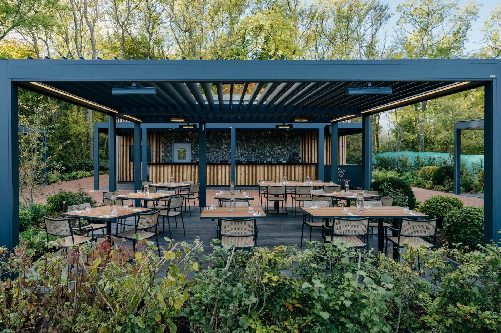
Fourteen estates with restaurants, cafés or seasonal kitchens worth planning around.
Find vineyards with food →
From shepherd's huts and vineyard lodges to polished country hotels and estate rooms.
Explore vineyard stays →
Nearest stations, honest taxi times and the routes that are genuinely practical.
Plan a car-free visit →Drop-in tasting rooms, pre-booked tours, self-guided trails and seasonal open days.
See what is open →A good place to begin
Alfriston · Seaford
Flint Barns, two places to eat, summer tastings and a free five-kilometre vineyard trail across the Downs.
View the guide → Estate verifiedBolney · Haywards Heath
Year-round tours, Cellar Door tastings, a restaurant and café, plus a shop full of local food and gifts.
View the guide → Guide favouriteWashington · Pulborough
Celebrated sparkling wine, Chalk Restaurant and a quietly beautiful setting beneath the South Downs.
View the guide →Make a day of it
Coffee in a Sussex village before the lanes get busy.
Walk the vines, hear the story and taste what grows here.
Choose an estate restaurant, terrace or seasonal kitchen.
A Downs walk, a country pub or one more tasting room.
Checked with the people who run the estates
We contact estates across England and Wales directly, verify practical information and add the details most directories miss. Look for the Estate-verified badge: 122 estates so far, and counting.
What estate-verified means → Run an estate? Send an update →New this autumn
We’ve started adding vineyards beyond Sussex, and each one goes live only once the estate has confirmed its details. 77 new estates so far, from Guernsey to Yorkshire, plus 8 more in Kent.
See every region →Curated by us, not by algorithm
Thirty-seven estates is a lot. So we have picked the ones worth your Saturday, grouped by the kind of day you are after. Every pick is one we would actually send a friend to.
Where to begin
If you have never done a Sussex vineyard before, start with one of these three. Complete estates, easy to reach, and impossible to get wrong.
Take your time
Some estates are worth a whole afternoon. These have the kitchens to make a proper day of it.
Wake up in the vines
The one flaw in a vineyard day is that somebody has to drive home. At these, nobody does.
Bring everyone
Not every visit is a quiet tasting for two. These estates are built for the whole party — four legs included.
Leave the car
No designated driver required. These are the estates you can reach on the train from London or Brighton.
Want the full picture? Browse and filter all 46 Sussex vineyards ↓
Popular ways to explore
Use a local trail or practical guide to narrow all 46 vineyards into a day that actually fits.
Before you set off
Sussex estates vary enormously. These are the planning rules that prevent the most common wasted journeys.
Many tours and formal tastings do. Some estates also have drop-in cellar doors, cafés or self-guided trails, so check the individual guide before travelling.
Yes, but the final leg matters. Our train guide lists the nearest station and a realistic onward taxi time rather than simply naming the closest rail stop.
Fourteen listings currently offer food, ranging from cafés and tasting plates to destination restaurants. Use the “Lunch on site” filter or the dedicated food guide.
Policies vary by space and activity. Dogs may be allowed outdoors or in a café but excluded from tours, restaurants or accommodation, so always check the individual listing.
Make a day of it
Sussex vineyards make more sense in clusters. Pair two estates with a village lunch, a walk or a night away instead of treating each tasting as an isolated booking.
See curated days out →Details you will not find in a generic list
Bolney confirmed its current tour prices, dog policy, free vineyard grounds and the one thing first-time visitors should not miss. Rathfinny confirmed turn-up tastings, family and access guidance, its free 5km trail and the best stations from London and Brighton.
A quiet note from Sussex wine country
The best vineyard days out, straight to your inbox
One useful weekly email with vineyard openings, seasonal events, new verified details and a countryside day worth saving.
By county: East Sussex vineyards (26) · West Sussex vineyards (18)